Introduction générale
1. Contexte
Dans le cadre du développement durable et de l’optimisation des processus industriels, la ville industrielle de TEKBOT CITY souhaite accueillir une nouvelle entreprise spécialisée dans le recyclage des déchets. Afin de moderniser ses infrastructures et de renforcer l’efficacité du tri, il est envisagé d’installer un système intelligent de convoyeur capable d’identifier, trier et comptabiliser automatiquement différents types de déchets.
Ce projet s'inscrit dans le cadre de la TRC 2025, un challenge technologique pluridisciplinaire visant à combiner la mécanique, l’électronique et l’informatique embarquée pour résoudre des problématiques industrielles concrètes.
2. Objectifs
L’objectif principal de ce projet est de concevoir, réaliser et tester un système de convoyeur intelligent capable de :
- Détecter la présence d’un objet(un déchet) sur un tapis roulant,
- Identifier sa couleur et son type(Rouge, Vert, Jaune, Bleu) à l’aide d’un capteur adapté,
- Compter chaque type de déchet détecté,
- Et afficher en temps réel ces données sur une interface web destinée aux administrateurs
3. Présentation du système
Le système est composé de trois grandes parties interconnectées :
- La bande transporteuse(convoyeur) reste immobile en l’absence de déchet et s’active automatiquement dès qu’un objet est détecté par un capteur de présence. Elle transporte le déchet jusqu’à une zone de dépôt.
- Le module de tri utilise un capteur de couleur pour identifier l’objet. Un algorithme embarqué analyse cette couleur et classe le déchet dans une catégorie définie. En fin de course, une indication visuelle informe l’équipe de collecte sur le bac approprié.
- L’interface web reçoit les données via une communication série (Web Serial API) et affiche dynamiquement le nombre de déchets triés par couleur. Elle offre une visualisation claire, et permet un suivi en direct.
4. Technologies utilisées
Le projet exploite un ensemble cohérent de technologies issues des trois domaines du projet :
| Domaine | Technologies / Outils utilisés |
|---|---|
| Électronique | Arduino Nano, capteur de couleur(ColorPal), capteur de présence(Ultrason), moteur DC, LED RGB, driver moteur, alimentation Li‑Ion |
| Informatique | HTML, CSS, JavaScript (Web Serial API), Python, Chart.js pour les graphiques, communication série USB |
| Mécanique | Conception CAO sur SolidWorks, tapis roulant, structure en bois et plastique |
Cahier de charge
1. Besoins fonctionnels
Le système de convoyeur doit répondre aux besoins suivants
-
Tri intelligent de 4 types de déchets, représentés par des objets de couleurs différentes:
- Rouge → Type 1
- Vert → Type 2
- Jaune → Type 3
- Bleu → Type 4
- Détection automatique de la présence d’un objet sur la bande transporteuse à l’aide d’un capteur de présence
- Identification précise de la couleur du déchet via un capteur de couleur.
- Activation automatique du convoyeur uniquement lorsqu’un objet est détecté.
- Indication claire de la catégorie de tri, pour permettre une collecte manuelle efficace dans les bacs correspondants.
- Visualisation en temps réell sur une interface web intuitive, permettant à l’administrateur de :
- Suivre le nombre de déchets triés par type.
- Suivre la performance du système
- Intervenir en cas de problème
2. Contraintes
Le système doit respecter un ensemble de contraintes techniques fixées :
- Alimentation autonome à partir d’un bloc de batteries lithium, garantissant une mobilité et une sécurité énergétique.
-
Détection obligatoire par un système de capteurs imposés :
- Capteur de présence
- Capteur de couleur
- Microcontrôleur imposé : Arduino Nano ou ATmega
-
Contraintes mécaniques précises :
- Longueur du convoyeur : 650 mm.
- Hauteur du tapis par rapport au sol : 100 mm.
-
Poids et dimensions des objets à trier :
- Forme : cube.
- Taille : 30 mm de côté.
Partie mécanique
1. Étude de conception mécanique(Analyse fonctionnelle)
L’analyse fonctionnelle est une démarche essentielle dans la conception d’un système technique. Elle vise à identifier, comprendre et formaliser les besoins réels des utilisateurs ainsi que les fonctions que le système doit remplir pour y répondre. Dans le cadre de ce projet, qui consiste à développer un système de convoyeur intelligent pour le tri de déchets(considérés ici comme des objets colorés), l’analyse fonctionnelle permettra de structurer la réflexion en distinguant les fonctions principales, les contraintes techniques, et les interactions entre les différents composants.
a. Analyse de besoin:
La bête à cornes est un diagramme représenté sous forme de graphique. Il permet de savoir si un produit ou un service répond aux besoins des utilisateurs. Elle est appelée bête à corne, car elle ressemble à une tête de taureau avec la ligne reliant les deux boules en haut du diagramme. Pour débuter, nous allons commencer par faire une analyse de besoin en utilisant ce diagramme de bête à corne qui va nous permettre de répondre aux trois questions suivantes:
- Qui utilise le système ?
- Sur quoi agit-il ?
- Dans quel but ?

b. Énoncé du besoin
Notre système de convoyeur rend service à une entreprise de recyclage dans la zone industrielle de TECHBOT CITY en permettant de trier automatiquement des déchets en fonction de leurs couleurs afin de faciliter la collecte.
c. Analyse fonctionnelle du besoin (AFB)
Une analyse fonctionnelle de besoin se concentre sur l'identification de deux types principaux de fonctions: les fonctions principales et les fonctions contraintes. Les fonctions principales décrivent ce que le produit ou système doit faire pour satisfaire le besoin de l'utilisateur, tandis que les fonctions contraintes définissent les limites ou les conditions dans lesquelles ces fonctions principales doivent être réalisées.
Fonctions principales:
- Elles sont la raison d'être du produit ou du système.
- Elles répondent directement au besoin de l'utilisateur.
- Elles peuvent être décomposées en fonctions élémentaires pour une analyse plus détaillée.
Fonctions contraintes
- Elles limitent les choix du concepteur et du produit.
- Elles peuvent être liées à la sécurité, l'environnement, l'ergonomie, etc.
- Exemple: "Être compatible avec les normes de sécurité" pour une voiture.
En plus de ces fonctions principales et les fonctions de contraintes, nous allons ajouter et détailler des fonctions de services pour mieux satisfaire les besoins de l’entreprise de faire le système de tri avec le convoyeur.
En résumé, l'analyse fonctionnelle de besoin vise à identifier et à caractériser ces deux types de fonctions afin de bien comprendre les exigences du produit et de garantir sa pertinence par rapport au besoin initial.
Pour bien étudier notre système et pour définir les fonctions principales et les fonctions de contraintes, nous allons utiliser le diagramme de pieuvre.
Diagramme de pieuvre:

| FP1 | transférer les déchets |
| FP2 | trier les déchets |
| FP3 | interface web pour affichage |
| FC1 | utiliser l'arduino nano |
| FC2 | alimentation batterie lithium |
| FC3 | le convoyeur ne doit fonctionner que si un déchet est présent |
| FC4 | le capteur de présence(Ultrason) |
| FC5 |
dimension:
|
| FC6 | les déchets sous formes de cubes de 30 mm |
| FS1 | détecter la présence d'un déchet |
| FS2 | identifier la couleur du déchet |
| FS3 | déplacer le tapis du convoyeur |
| FS4 | afficher les statistiques de tri en temps réel sur une interface web |
| FS5 | indiquer à l'utilisateur dans quelle benne placer le déchet |
d. Diagramme FAST
Le diagramme FAST (Function Analysis System Technique) est la représentation visuelle d'un produit ou d’un système et de toutes ses fonctions. Ce diagramme est un outil utilisé par les entreprises pour obtenir une vision globale d'un produit existant ou en cours de création. Il représente schématiquement toutes les fonctions de l'article et la manière dont il les met en œuvre.
À quoi sert le diagramme FAST ?
Il répond à trois grandes questions pour chaque fonction :
- Pourquoi ?
- Comment ?
- Quand ?
Il représente graphiquement les relations entre les fonctions principales (FP) et les fonctions de service (FS)

e. Conclusion générale de l’analyse fonctionnelle
L’analyse fonctionnelle a permis d’identifier clairement les fonctions principales du système de convoyeur : trier automatiquement les déchets selon leur couleur. Pour répondre efficacement à ce besoin, plusieurs fonctions de service ont été définies, telles que la détection de présence, l’identification de couleur, le déplacement du tapis et l’affichage des statistiques en temps réel.
Les fonctions contraintes imposées par le cahier des charges (composants à utiliser, dimensions, alimentation etc.) ont été intégrées dans la conception dès les premières étapes
Cette analyse permet ainsi de poser une base solide pour la phase de conception et garantit que le système répondra aux attentes techniques, fonctionnelles et ergonomiques de l’entreprise utilisatrice.
2. Choix des composants mécaniques
Ayant déjà du bois comme matière première, nous avons décidé de l’utiliser, ainsi que d’autres composants déjà en notre possession tels que le tapis et les roulements.
Voici donc le tableau récapitulatif des composants utilisés et de leur rôle :
| Composants | Matériaux |
|---|---|
| Parois latérales | Bois |
| Tapis | Textile |
| Roulements | Acier |
| Tambours | Plastique |
| Supports des tambours | Plastique |
| Supports des composants électroniques | Plastique |
3. Modélisation CAO (SolidWorks)
Nous avons conçu les différentes pièces puis avons assemblé sur SolidWorks en respectant les dimensions du cahier de charge.
a. Parois latérales
Il s'agit de la structure principale du convoyeur.


b. Tapis
Il s'agit de la structure principale du convoyeur.


c. Roulements
Il s'agit de la structure principale du convoyeur.
Interieur du roulement:


Exterieur du roulement:

 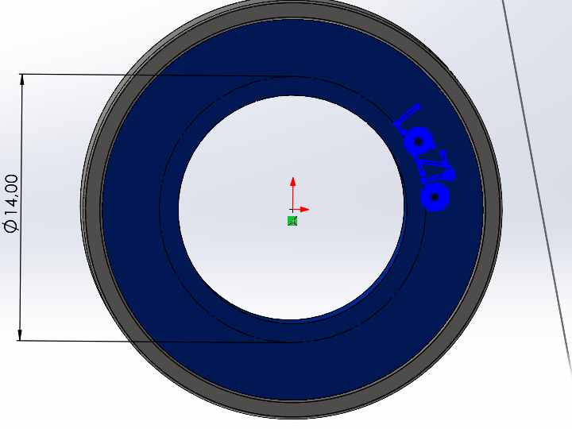
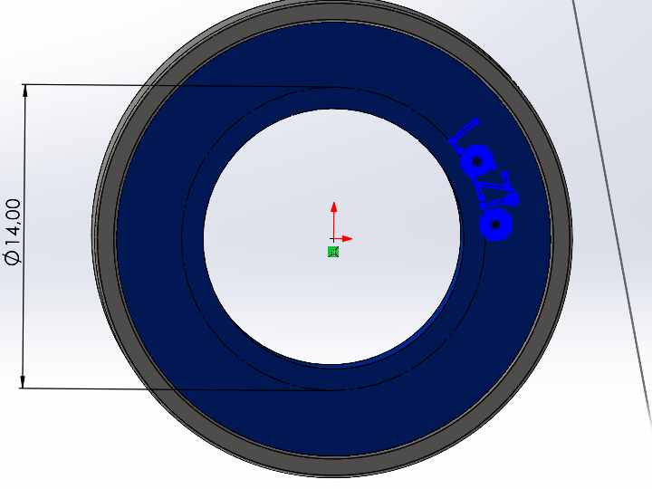
Le roulement assemblé:
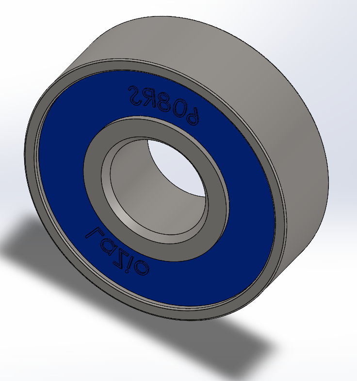télécharger les fichiers du roulement
d. Tambours
Les deux tambours entrainent le tapis en rotation. L'un des tambours est connecté au moteur.
 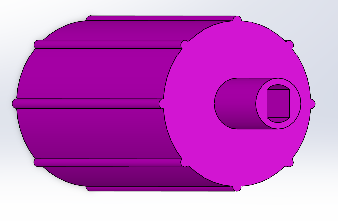
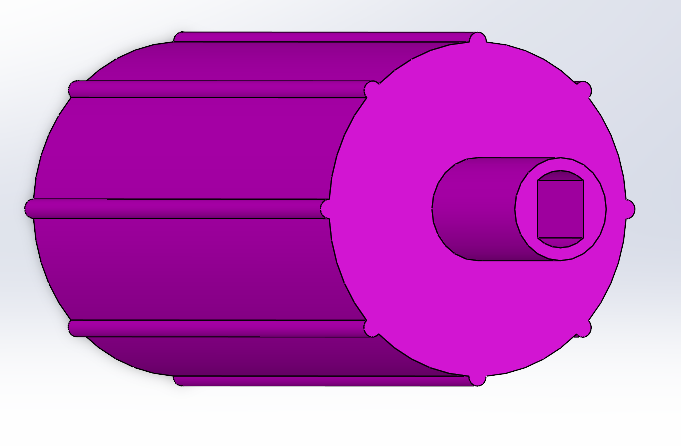


e. Supports des tambours
Ils permettent de relier les parois, les roulement et les tambours.


f. Supports des composants électroniques et autres
Ils permettent de supporter et de fixer les composants électroniques.


Support du capteur de couleur, de la led RGB et des boutons poussoirs
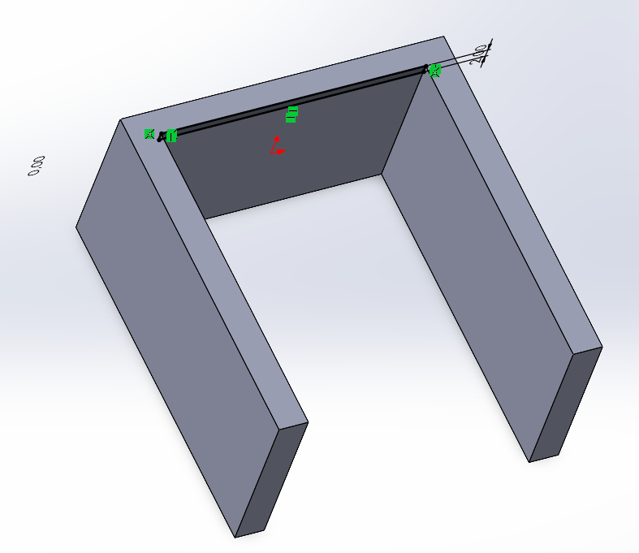 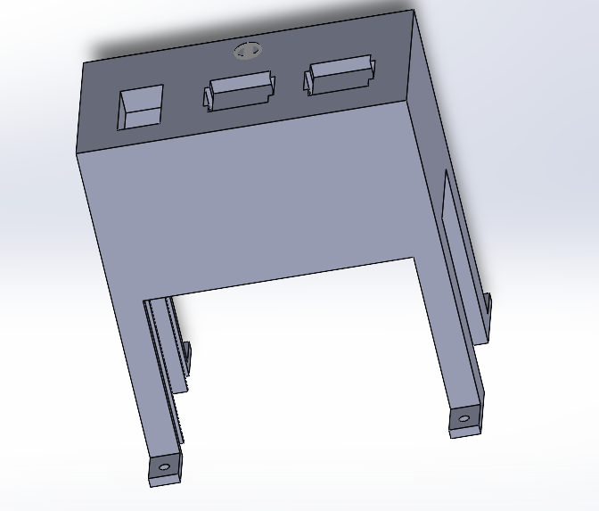
télécharger le support du capteur de couleur et des boutons poussoirs
Support du capteur infrarouge
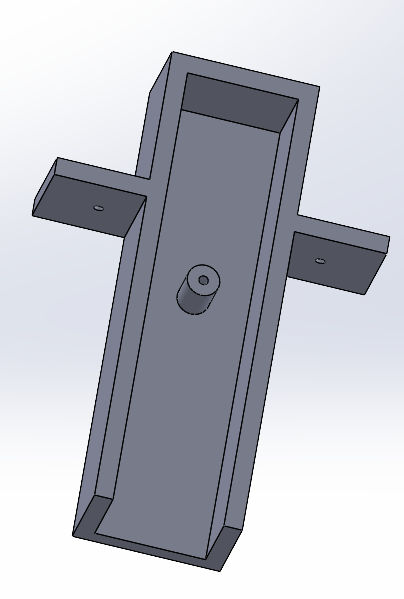

g. Moteur DC
Il s'agit de la structure principale du convoyeur.


 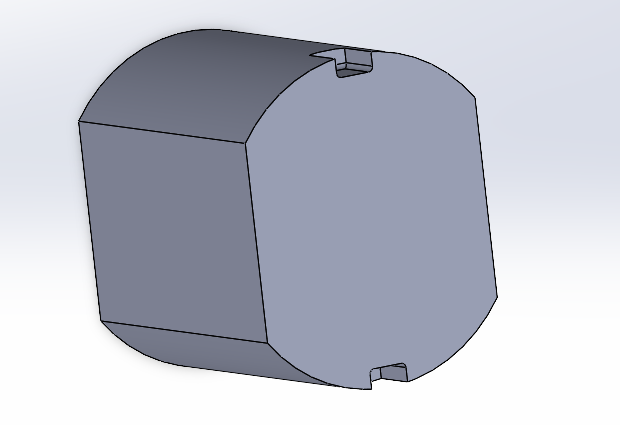
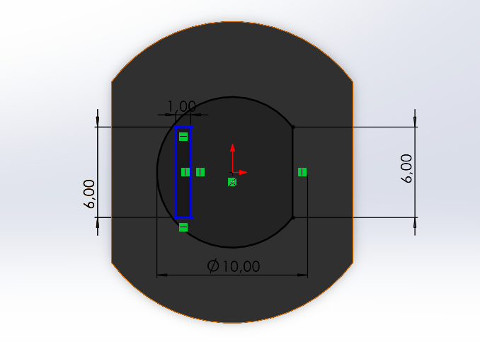
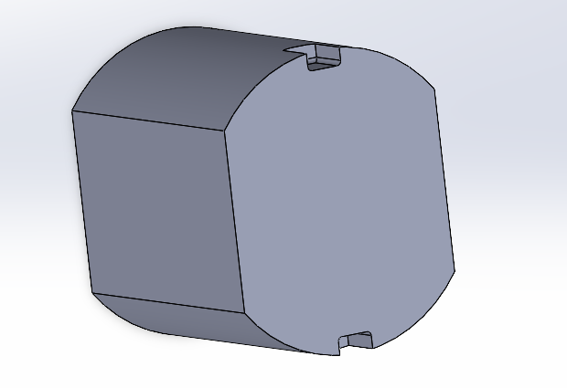
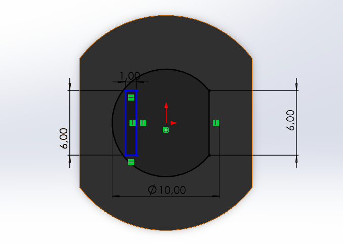
 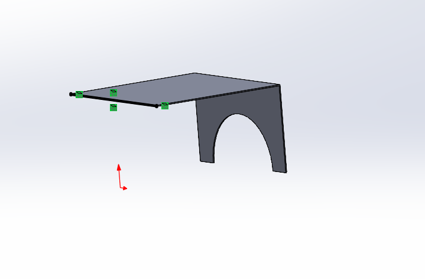
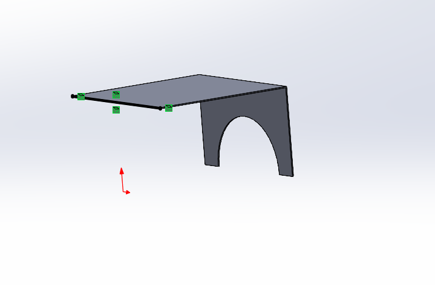


h. Le convoyeur assemblé
A partir de ces pièces, nous avons assemblé le convoyeur.

 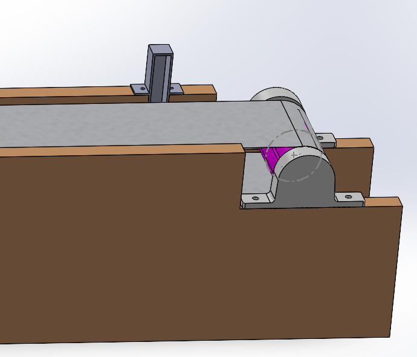
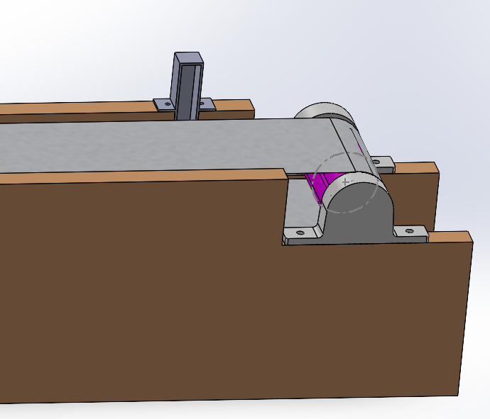

Télécharger l'ensemble(pièces et assemblages) ici
4. Réalisation
Les pièces en plastique nécessaires au montage ont été modélisées puis imprimées à l’aide d’une imprimante 3D.
Le bois a été découpé en respectant les dimensions définies sur SolidWorks, garantissant une structure précise. Pour la fabrication du tapis roulant, un textile utilisé habituellement pour les sacs a été choisi, assurant une bonne résistance.


Cette méthode a permis d’obtenir des composants parfaitement adaptés au système. L'ensemble a été assemblé avec soin pour assurer la stabilité et la fonctionnalité du convoyeur.
 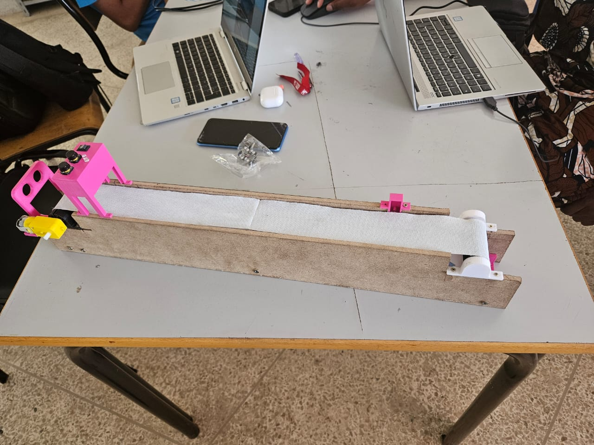
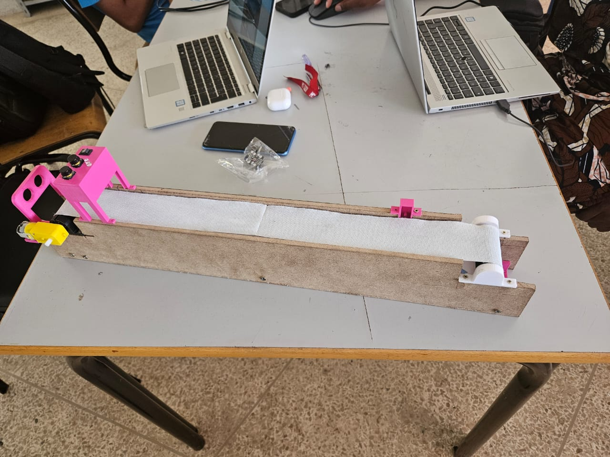
Partie électronique
1. Cahier de charge
Dans le cadre d’un projet final en systèmes embarqués, le but est de concevoir un système automatisé de tri de déchets inspiré des procédés industriels de recyclage.
a. Objectifs fonctionnels
- Détecter la présence d’un objet/déchet sur la bande.
- Mettre en mouvement la bande uniquement si un déchet est détecté.
- Détecter la couleur de l’objet (cube) en mouvement.
- Afficher la couleur via une LED RGB.
- Transmettre la couleur détectée à une interface web via Wi-Fi.
b. Contraintes techniques
- Alimentation sur 3 piles Li-ion 3,7V (≈11,1V).
- Conversion de tension via module buck MP2307 vers 5V.
- Circuit centré sur une Arduino Nano.
- Capteurs alimentés en 5V.
- Utilisation minimale de composants externes (driver moteur simple par MOSFET).
c. Composants utilisés
| Arduino Nano | 1 |
| Capteur à ultrasons HC-SR04 | 1 |
| Capteur de couleur TCS230 | 1 |
| Capteur infrarouge | 1 |
| LED RGB | 1 |
| Moteur DC 6-12V | 1 |
| Module WiFi (ESP-01) | 1 |
| MOSFET canal N (IRFZ44N) | 1 |
| Régulateur buck MP2307 | 1 |
| Boutons poussoirs | 2 |
| Interrupteur | 1 |
| Diode de roue libre (1N4007) | 1 |
| Résistances, câblage | - |
2. Schéma synoptique
3. Description fonctionnelle des blocs
a. Le microcontrôleur(Arduino Nano)
L'Arduino Nano est une carte microcontrôleur compacte et polyvalente basée sur l'ATmega328P. Ses broches et ses caractéristiques techniques lui confèrent de nombreuses fonctionnalités.
Il constitue le cœur de notre système. C’est lui qui reçoit l’ensemble des données issues des capteurs et qui pilote les différents actionneurs : l’éclairage RGB, le moteur (pour le démarrage et l’arrêt du tapis), ainsi que les boutons de mise en marche et d’arrêt du système. Sans ce composant central, aucun fonctionnement n’est possible.
Son fonctionnement repose sur un programme écrit en langage C, spécifiquement conçu pour coordonner tous les éléments du système.
Dans la suite du document, nous détaillerons le code ainsi que le schéma de câblage, en précisant à quelles broches de l’Arduino Nano chaque capteur ou composant est connecté.
-
Quelques caractéristiques:
| Rôles | |
|---|---|
| Vin, 5V, 3.3V | Alimentation |
| Reset | Réinitialisation du microcontrôleur. |
| Broches analogiques(A0 – A7) | Entrée analogique |
| Broches numériques (D0 – D13) | Entrée/Sortie numérique uniquement |
| Série (Rx, Tx) | Transmission et la réception de données série TTL |
| PWM (3, 5, 6, 9, 11) | Sortie PWM 8 bits |
| SPI (10, 11, 12, 13) | Communication SPI |
b. Bloc d'alimentation
Le système est alimenté par trois batteries Li-Ion 3.7V montées en série (tension totale ≈11.1V). Cette tension alimente directement le moteur via le circuit MOSFET. Pour alimenter les composants électroniques en 5V, un module buck MP2307 est utilisé. Ce module convertit efficacement la tension 11.1V vers 5V avec un bon rendement.
- Avantages du MP2307: faible échauffement, grande stabilité, courant jusqu’à 2A.
c. Les capteurs
✦ Capteur à ultrasons (HC-SR04)
Le capteur à ultrasons détermine la distance d’un objet par rapport à sa position. Il génère un signal à bande étroite à une fréquence de 40 kHz et capte le signal réfléchi(écho). Sur la base du temps de propagation du son vers et depuis l’objet, la distance (en centimètres) peut être déterminée assez précisément. Ce capteur permet donc de détecter la présence d'une pièce tout le long du convoyeur.

- TRIG(OUTPUT) envoie une impulsion électrique de 10 microsecondes pour déclencher la mesure. Cette impulsion commande au capteur d’émettre une onde ultrasonore.
- Echo(INPUT) reçoit l’onde ultrasonore réfléchie par un objet et passe à l’état HAUT pendant une durée proportionnelle à la distance mesurée. Cette durée est utilisée pour calculer la distance entre le capteur et l’objet.
code_ultrasonic.ino
#define trigPin 5 // Définir la broche 2 pour le Trig
#define echoPin 6 // Définir la broche 3 pour l'Echo
long distance = 0; //stocke la distance calculée
void setup() {
pinMode(trigPin, OUTPUT); // Configurer trigPin en sortie
pinMode(echoPin, INPUT); // Configurer echoPin en entrée
Serial.begin(9600); // Initialiser la communication série à 9600 bauds
}
void loop() {
distance = getDistance();
// Afficher la distance sur le moniteur série
Serial.print("Distance: ");
Serial.print(distance);
Serial.println(" cm");
delay(1000); // Attendre 1 seconde avant de refaire une lecture
}
long getDistance() {
// Envoyer une impulsion de 10 µs pour déclencher le capteur
digitalWrite(trigPin, LOW);
delayMicroseconds(2);
digitalWrite(trigPin, HIGH);
delayMicroseconds(10);
digitalWrite(trigPin, LOW);
// Mesurer la durée de l'écho
long duration = pulseIn(ECHO_PIN, HIGH);
// Calculer la distance en cm
long distance = (duration / 2) * 0.0344; // Vitesse du son = 0.0344 cm/µs
return distance;
}
✦ Capteur infrarouge
Placé en bout de convoyeur, à une distance adéquate, il émet un faisceau infrarouge à courte portée à l’aide d’une LED de 940 nm. Lorsqu’un objet s’approche, la lumière infrarouge est partiellement réfléchie vers un récepteur photoélectrique intégré. Cette variation de lumière permet au module de générer un signal numérique indiquant la présence ou l'absence d’un obstacle.
Compatible avec une alimentation de 3,3 V à 5 V et consommant jusqu’à 100 mA, le capteur s’adapte à la plupart des microcontrôleurs. Il fonctionne à une fréquence de 38 kHz, limitant les interférences dues à la lumière ambiante, et peut opérer dans des températures allant de -25 °C à +55 °C. Sa robustesse et sa précision en font un composant essentiel pour assurer un arrêt précis du convoyeur en fin de cycle.
NB: le potentiomètre intégré permet d'ajuster la plage de détection du module.

-
Sortie logique:
- HIGH = objet détecté
- LOW = pas d’objet
Ce capteur infrarouge est utilisé pour détecter l’arrivée d’une pièce en fin de convoyage et d'arrêter le moteur.

code_infrarouge.ino
#define infraredSensor 19
int infraredValue = 0; //stocke la valeur du capteur infrarouge
void setup(){
pinMode(infraredSensor, INPUT);
Serial.begin(9600);
}
void loop(){
infraredValue = digitalRead(infraredSensor);
// affichage sur le moniteur
Serial.print(" Valeur du capteur: ");
Serial.println(infraredValue);
delay(500);
}
✦ Le capteur de couleur TCS230/TCS3200
Le capteur de couleur TCS230 (ou TCS3200) est un dispositif optique capable de détecter la couleur dominante d’un objet. Il fonctionne en convertissant l’intensité lumineuse de la couleur perçue en un signal carré dont la fréquence varie selon la couleur détectée. Ce capteur est plus fiable et performant que le capteur de couleur ColorPal utilisé initialement.
-
◉ Fonctionnement:
- Le capteur est composé d'une matrice de 8×8 photodiodes, soit 64 au total: 3x16 photodiodes sensibles au rouge, vert, bleu, et 16 photodiodes sans filtre(blanc).
- Les photodiodes sont sélectionnées via les broches S2 et S3, permettant de choisir la composante de couleur à mesurer (R, G ou B).
- La sortie du capteur est fournie sur la broche OUT, sous forme d’un signal carré dont la fréquence est proportionnelle à l’intensité de la couleur mesurée.
-
◉ Brochage:
| Pin | Rôle |
|---|---|
| VCC | Alimentation(2.7-5.5V) |
| GND | Masse |
| S0, S1 | Selection de l'échelle de fréquence de sortie |
| S2, S3 | Selection du type de photodiode |
| Out | Sortie de fréquence |
| OE | Activer la sortie(actif bas) |
-
◉ Utilisation avec un Arduino:
- Lorsqu’un objet est placé devant le capteur, celui-ci mesure la lumière réfléchie par l’objet pour chaque composante de couleur (rouge, vert, bleu).
- Le capteur envoie ensuite les fréquences mesurées à l’Arduino, qui les analyse pour déterminer la couleur dominante.

code_tcs230.ino
// Définir les broches du capteur
#define S0 2
#define S1 3
#define S2 4
#define S3 5
#define sensorOut 7
void setup() {
Serial.begin(9600); // Initialiser la communication série à 9600 bauds
pinMode(S0, OUTPUT); // Définir S0 comme sortie
pinMode(S1, OUTPUT); // Définir S1 comme sortie
pinMode(S2, OUTPUT); // Définir S2 comme sortie
pinMode(S3, OUTPUT); // Définir S3 comme sortie
pinMode(sensorOut, INPUT); // Définir sensorOut comme entrée
// Configurer l'échelle de fréquence à 20%
digitalWrite(S0, HIGH);
digitalWrite(S1, LOW);
}
void loop() {
printColorFrequency();
delay(500); // Attendre 500 ms avant la prochaine lecture
}
void printColorFrequency() {
// Lire la valeur de la couleur rouge
digitalWrite(S2, LOW); // Activer les photodiodes rouges
digitalWrite(S3, LOW);
int redFrequency = pulseIn(sensorOut, LOW); // Lire la fréquence de sortie pour le rouge
Serial.print("Red: ");
Serial.print(redFrequency);
Serial.print(" ");
// Lire la valeur de la couleur verte
digitalWrite(S2, HIGH); // Activer les photodiodes vertes
digitalWrite(S3, HIGH);
int greenFrequency = pulseIn(sensorOut, LOW); // Lire la fréquence de sortie pour le vert
Serial.print("Green: ");
Serial.print(greenFrequency);
Serial.print(" ");
// Lire la valeur de la couleur bleue
digitalWrite(S2, LOW); // Activer les photodiodes bleues
digitalWrite(S3, HIGH);
int blueFrequency = pulseIn(sensorOut, LOW); // Lire la fréquence de sortie pour le bleu
Serial.print("Blue: ");
Serial.println(blueFrequency);
}
d. Module Wi-Fi ESP01
Le module Wi-Fi ESP8266, version ESP-01, permet aux microcontrôleurs de se connecter à un réseau Wi-Fi. Dans notre projet, il est principalement utilisé pour communiquer avec une interface web et transmettre des informations(la couleur detectée et l'état du système).
✦ Configuration de l’IDE Arduino pour l’ESP8266
Pour utiliser l’ESP8266 avec l’IDE Arduino, il faut suivre les étapes suivantes :- Ajouter le support de la carte ESP8266: ajouter l’URL(http://arduino.esp8266.com/stable/package_esp8266com_index.json) de la source ESP8266 dans les préférences de l’IDE
- Installer le package logiciel: rechercher et installer la bibliothèque ESP8266
- Sélectionner la carte: choisir "Generic ESP8266 Module"
✦ Brochage de l’ESP-01 (ESP8266-01)
| Rôles | |
|---|---|
| VCC | Alimentation(3.3V) |
| GND | Masse |
| TX | Transmission de données |
| RX | Réception de données |
| CH_PD / EN | Activation du module |
| Reset | Réinitialisation du module |
| GPIO0 et GPIO2 | Broches d’entrée/sortie numériques |
NB: ce module n'est pas encore intégré dans cette documentation à cause de problèmes de communication avec l'interface. La communication se fera alors par cable USB pour le moment.
e. Bloc de sortie
✦ Moteur
Le moteur à courant continu (DC) 6–12 V est utilisé pour entraîner le tapis du convoyeur. Il assure le déplacement des objets détectés grâce à son couple adapté aux applications de petite puissance. Son alimentation est assurée par une source externe(12 V), tandis que sa mise en marche est commandée électroniquement.
Pour contrôler le moteur, un transistor MOSFET canal N est utilisé comme interrupteur électronique. Ce composant permet de gérer l’alimentation du moteur en fonction du signal envoyé par la carte Arduino. Une diode de roue libre est placée en parallèle du moteur afin de protéger le circuit contre les surtensions transitoires générées lors de l’arrêt du moteur, dues à l’induction.
La commande du moteur se fait via une broche PWM de l’Arduino connectée à la grille du MOSFET. En faisant varier le rapport cyclique du signal PWM, il est possible d'ajuster la vitesse de rotation du moteur, et donc la vitesse du convoyeur. Un signal à rapport cyclique élevé entraîne une rotation rapide, tandis qu’un rapport plus faible réduit la vitesse du moteur.
Ainsi, le système est plus optimisé et ne dépend plus d'un moteur driver.
 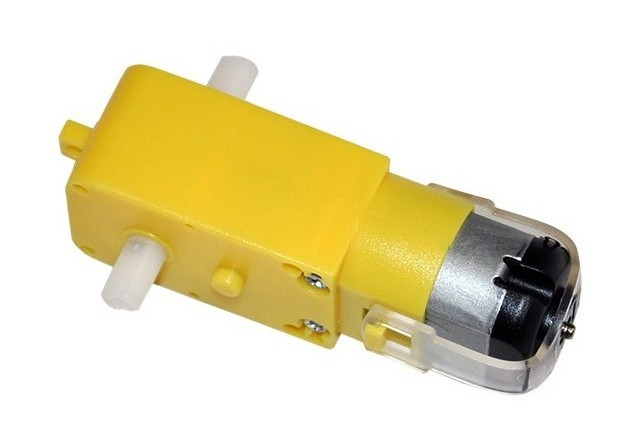
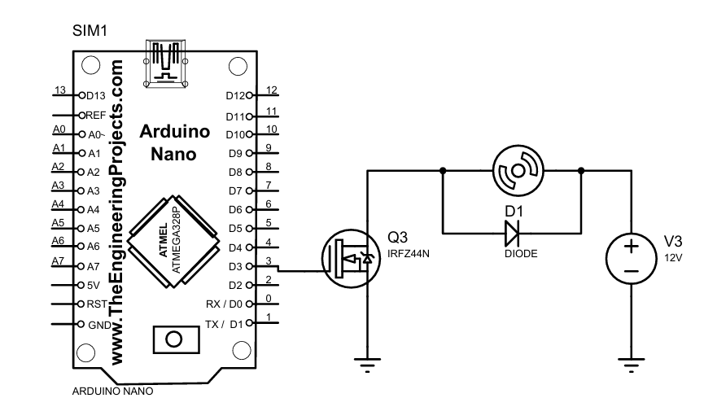
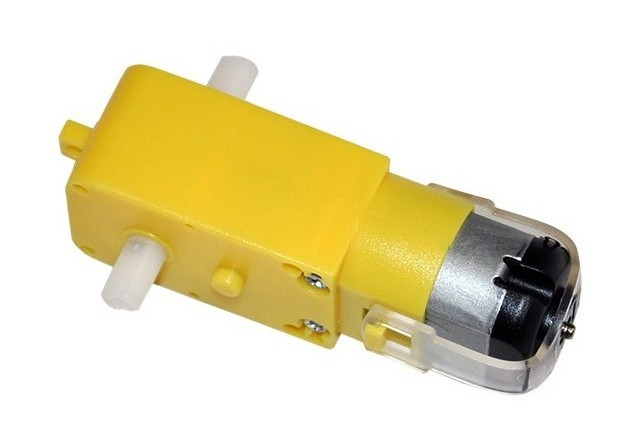
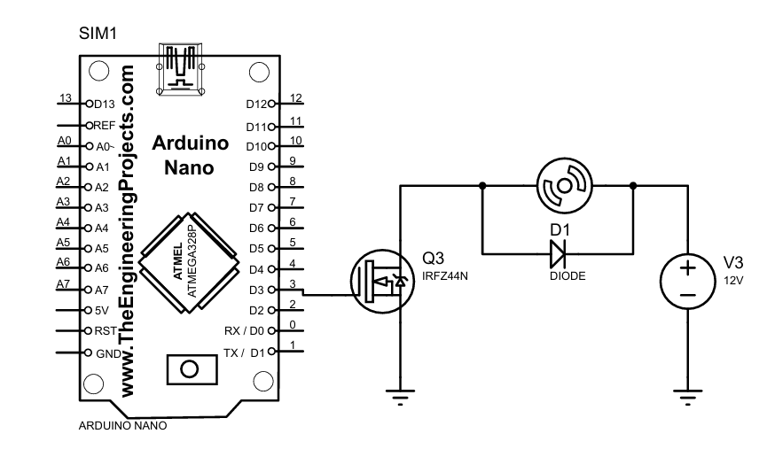
code_moteur.ino
#define pinMotor 3
void setup () {
pinMode(pinMotor, OUTPUT);
}
void loop() {
analogWrite(pinMotor, 100);
delay(2000);
analogWrite(pinMotor, 0);
delay(5000);
}
✦ Led RGB
La LED RGB affiche la couleur détectée(rouge, bleu, vert, jaune).
Le signal PWM est utilisé pour moduler l’intensité de chaque couleur et ainsi permettre le mélange des couleurs. Les broches de la LED doivent donc être connectées à des pins compatibles PWM.
Elle peut aussi indiquer l'état du convoyeur(en marche ou à l'arrêt).

Led RGB à anode commun
code_led.ino
#define LED_R 9
#define LED_G 10
#define LED_B 11
void setup() {
pinMode(LED_R, OUTPUT);
pinMode(LED_G, OUTPUT);
pinMode(LED_B, OUTPUT);
}
void loop() {
setColor(100, 0, 0); //rouge
delay(2000);
setColor(0, 100, 0); //vert
delay(2000);
setColor(0, 0, 100); //bleu
delay(2000);
setColor(100, 100, 0); //jaune
delay(2000);
}
void setColor(unsigned int red, unsigned int green, unsigned int blue) {
red = map(red, 0, 255, 255, 0);
green = map(green, 0, 255, 255, 0);
blue = map(blue, 0, 255, 255, 0);
analogWrite(LED_R, red);
analogWrite(LED_G, green);
analogWrite(LED_B, blue);
}
NB: Utiliser des résistances pour protéger la led. Ici, nous avons utilisé des résistances de 270 Ω pour chaque pin RGB.
f. Bloc de commande
Un interrupteur a été installé pour permettre à l'utilisateur de mettre sous tension ou de couper le courant.
Par ailleurs, deux boutons-poussoirs sont prévus pour commander la mise en marche et l'arrêt du convoyeur.
- Bouton Start(connecté au pin 7 de l'Arduino): permet d'activer le système.
- Bouton Stop(connecté au pin 2 de l'Arduino): permet de désactiver le système à l'aide d'interruption , assurant ainsi un arrêt rapide et réactif.
NB: Nous utilisons les résistances pull-up internes afin d’optimiser l’utilisation du matériel.
code_bp.ino
const byte pinStart = 7;
const byte pinStop = 2;
const byte ledPin = 12;
volatile bool blinking = false;
unsigned long lastInterrupt = 0;
void setup() {
pinMode(ledPin, OUTPUT);
// boutons poussoirs
pinMode(pinStart, INPUT_PULLUP);
pinMode(pinStop, INPUT_PULLUP);
attachInterrupt(digitalPinToInterrupt(pinStop), interrupt_routine, FALLING);
digitalWrite(ledPin, LOW); // éteint la led initialement
}
void loop() {
if(!blinking){
while(digitalRead(pinStart)){ //tant qu'on n'appuie pas sur btnStart, la boucle continue
delay(10);
}
blinking = true;
}
else{
digitalWrite(ledPin, HIGH);
delay(300);
digitalWrite(ledPin, LOW);
delay(300);
}
}
void interrupt_routine() {
unsigned long currentMillis = millis();
if (currentMillis - lastInterrupt > 100) { // anti-rebond de 100 ms
digitalWrite(ledPin, LOW);
blinking = false;
lastInterrupt = currentMillis;
}
}
4. Tests et validation
Après avoir pris en main chaque composant, il est temps de réaliser un test global du système électrique.
Nous avons réalisé les branchements sur un breadboard puis le circuit sur veroboard pour les tests afin de s'assurer que chaque composant s'integre au système electronique.
Voici quelques uns de ces test:
- Test du capteur de couleur avec la led RGB:
- Vérification de l’alimentation et du pilotage du moteur avec le circuit câblé sur veroboard.
5. Réalisation du PCB
Après avoir effectué tous les tests, nous avons réalisé un PCB sur Kicad comme suit:
Conception du schéma électronique.
Nous avons décidé par la suite de rassembler les Vcc et GND pour les capteurs, la led et les boutons poussoirs afin de faciliter les branchements.
Conception du schéma pour le pcb.
Attribution des empreintes.
Verificaton des erreurs (DRC)
Ajustement de la disposition et routage des pistes.
Plan de masse GND et ajout des textes pour les différents composants et pins.
Ajout des models 3D(arduino nano et serre-fils).
Visualisation 3D
télécharger les fichiers du PCB
6. Prototype final
Après les tests sur le breadboard et la conception du PCB, il est temps de réaliser le circuit final. Nous utilisons ici un veroboard, tout en respectant les pins utilisées dans la conception du PCB.
NB: Nous avons retravaillé notre circuit pour répondre aux exigences techniques et esthétiques.

Comparatif des deux prototypes
Prototype final adopté:


Partie informatique
1. Détection intelligente et automatisation
La détection intelligente repose sur un système de reconnaissance de couleur embarqué utilisant le capteur ColorPAL, piloté par une carte Arduino Nano. Ce système a pour mission d’identifier la couleur d’un objet (représentant un type de déchet) à son passage sur un tapis convoyeur automatisé.
-
Détails
- Initialement, le convoyeur est à l'arrêt.
- Un objet(cube) est posé sur le tapis.
- Le capteur de distance détecte l'objet et le convoyeur démarre grâce au moteur.
- Lorsque l'objet passe dans la zone de détection, le convoyeur s'arrête et le capteur de couleur s'active pour identifier la couleur de l'objet.
- Cette couleur, codées sous forme de lettres majuscules (R, G, B, Y, U), est envoyée au serveur Python pour être stockée et publiée sur l'interface web.
- La led RGB s'allume suivant la couleur detectée.
- Le convoyeur redémarre et ne s'arrête que lorsque l'objet est en bout de course, determiné par un capteur infrarouge à la fin du convoyeur.
code_convoyeur.ino
// boutons marche arrêt & urgence
#define pinStart 7
#define pinStop = 2;
// Contrôle moteur
#define pinMotor 3
// Définir les broches du capteur de couleur
#define LED_R 9
#define LED_G 10
#define LED_B 11
// capteur de couleur
#define S0 14
#define S1 15
#define S2 16
#define S3 17
#define Out 18
// capteur infrarouge
#define infraredSensor 19
// capteur Ultrason
#define trigPin 5
#define echoPin 6
unsigned int redFrequency = 0, greenFrequency = 0, blueFrequency = 0, infraredValue = 0;
const int nbEchantillon = 5;
unsigned long distance = 0, lastInterrupt = 0;
char color_detected = 'U';
bool finTapis = true;
volatile String state = "OFF";
void setup()
{
pinMode(LED_R, OUTPUT);
pinMode(LED_G, OUTPUT);
pinMode(LED_B, OUTPUT);
setColor(0, 0, 0); // blanc
// Ultrason
pinMode(trigPin, OUTPUT);
pinMode(echoPin, INPUT);
// Infrarouge
pinMode(infraredSensor, INPUT);
// capteur de couleur
pinMode(S0, OUTPUT);
pinMode(S1, OUTPUT);
pinMode(S2, OUTPUT);
pinMode(S3, OUTPUT);
pinMode(Out, INPUT);
// Configurer l'échelle de fréquence à 100%
digitalWrite(S0, HIGH);
digitalWrite(S1, HIGH);
// boutons poussoirs
pinMode(pinStart, INPUT_PULLUP);
pinMode(pinStop, INPUT_PULLUP);
attachInterrupt(digitalPinToInterrupt(pinStop), interrupt_routine, FALLING);
Serial.begin(9600);
delay(100);
Serial.println(state);
}
void loop()
{
if (state == "OFF")
{
analogWrite(pinMotor, 0);
while (digitalRead(pinStart))
{
// clignotement de la led pour indiquer que le système peut être lancé
setColor(255, 165, 0);
delay(100);
setColor(0, 0, 0);
delay(100);
}
state = "ON";
Serial.println(state);
}
else
{
// distance de l'objet par rapport au capteur
distance = getDistance();
infraredValue = digitalRead(infraredSensor);
if (infraredValue)
{
finTapis = true;
analogWrite(pinMotor, 0);
}
else if (distance < 50 || !finTapis)
{
// zone de détection de couleur
if (9 < distance && distance < 13)
{
finTapis = false;
// arrêt du moteur
analogWrite(pinMotor, 0);
color_detected = getColor(); // detection de couleur
Serial.println(color_detected); // envoie de la couleur à l'interface
// redemarrage du moteur
analogWrite(pinMotor, 100);
delay(500);
}
analogWrite(pinMotor, 100);
delay(20);
}
else
{
// arrêt du moteur
analogWrite(pinMotor, 0);
}
}
}
void setColor(unsigned int red, unsigned int green, unsigned int blue)
{
red = map(red, 0, 255, 255, 0);
green = map(green, 0, 255, 255, 0);
blue = map(blue, 0, 255, 255, 0);
analogWrite(LED_R, red);
analogWrite(LED_G, green);
analogWrite(LED_B, blue);
}
void getFrequencyColor()
{
redFrequency = 0;
greenFrequency = 0;
blueFrequency = 0;
for (unsigned int i = 0; i < nbEchantillon; i++)
{
// Sélectionner filtre rouge
digitalWrite(S2, LOW);
digitalWrite(S3, LOW);
redFrequency += pulseIn(Out, LOW); // Mesure la frequence du rouge
// Sélectionner filtre vert
digitalWrite(S2, HIGH);
digitalWrite(S3, HIGH);
greenFrequency += pulseIn(Out, LOW); // Mesure la frequence du vert
// Sélectionner filtre bleu
digitalWrite(S2, LOW);
digitalWrite(S3, HIGH);
blueFrequency += pulseIn(Out, LOW); // Mesure la frequence du bleu
}
redFrequency /= nbEchantillon;
greenFrequency /= nbEchantillon;
blueFrequency /= nbEchantillon;
/*
// Afficher les valeurs pour la configuration
Serial.print("R:");
Serial.print(redFrequency);
Serial.print(" G:");
Serial.print(greenFrequency);
Serial.print("B:");
Serial.println(blueFrequency);
*/
}
char getColor()
{
setColor(0, 0, 0);
getFrequencyColor();
if (redFrequency > 25 && greenFrequency > 30 && blueFrequency > 25)
{
setColor(50, 50, 50);
return 'U'; // Pas de couleur détectée
}
if (redFrequency < 15)
{
int diffRG = greenFrequency - redFrequency; // Calculer la différence entre vert et rouge
if (diffRG < 5)
{
setColor(100, 100, 0); // jaune
return 'Y';
}
else if (diffRG >= 5)
{
setColor(100, 0, 0); // rouge
return 'R';
}
}
else if (greenFrequency < redFrequency && greenFrequency < blueFrequency && greenFrequency < 20)
{ // Si vert dominant et faible
setColor(0, 100, 0); // vert
return 'G';
}
else if (blueFrequency < redFrequency && blueFrequency < greenFrequency && blueFrequency < 20)
{
setColor(0, 0, 100); // bleu
return 'B';
}
else
{
setColor(50, 50, 50);
return 'U';
}
}
// Fonction pour lire la distance avec le capteur ultrason
long getDistance()
{
digitalWrite(trigPin, LOW);
delayMicroseconds(2);
digitalWrite(trigPin, HIGH);
delayMicroseconds(10);
digitalWrite(trigPin, LOW);
long duration = pulseIn(echoPin, HIGH);
long distance = (duration / 2.0) * 0.0344;
return distance;
}
void interrupt_routine()
{
}
void interrupt_routine()
{
unsigned long currentMillis = millis();
if (currentMillis - lastInterrupt > 50)
{ // anti-rebond de 50 ms
// arrêt moteur
analogWrite(pinMotor, 0);
state = "OFF";
Serial.println(state);
}
}
NB: Les commentaires expliquent en détail le code.
2. Interface Web
L’interface web du projet Convoyeur Intelligent permet la visualisation en temps réel des données reçues du capteur de couleurs Arduino. Elle affiche les compteurs de déchets selon leur couleur (Rouge, Vert, Bleu, Jaune, Inconnu). L’interface facilite le suivi du tri des déchets automatisé sur le convoyeur.
Fonctionnalités principales
a. Tableau de bord
-
Informations sur le système:
- Etat du système(actif/inactif): permet de savoir si le système est en marche ou non.
- Taux de détection: permet un suivi du taux d'objet trié sans erreur(inconnu).
- Nombre total des déchets trié dans le système: donne une idée sur la quantité triée.
- Le dernier dechet tri: renseigne le dernier dechet par le système.
- Animation d'un convoyeur: permet une visualiser les objets entrant(avec leur couleur respective).
- Le nombre de dechets par catégorie:
- Visualisation représentative de chaque type de déchet.
- Visualisation en temps réel du nombre de déchets par catégorie.
b. Historiques des déchets
- Journal détaillé de toutes les détections d’objets triés, avec horodatage, type et couleur
- Permet de consulter les événements passés pour analyse ou vérification.
- Export de l'historique en fichier .csv pour analyse plus pousée.
c. Statistiques
- Affiche la repartition de chaque catégorie de déchets.
- Export des statistiques en fichier .csv pour des analyses.
- Export des statistiques en image pour des publications, ...
d. Paramètres
- Choix de thème: clair(par défaut)/sombre
- Choix de langue: Français(par défaut)/Anglais
- Réinitialisation de la base de données: supprimer l'ensemble des données
3. Architecture technique
Voici l'arborescence du dossier
- convoyeur_web
- __pycache
- data
- historique.json
- static
- script.js
- style.css
- tekbot_logo.png
- trc.png
- templates
- index.html
- venv
- app.py
a. Backend (Serveur Flask + SocketIO)
Nous utilisons python avec ces librairies.
- Connexion série avec l’Arduino(via serial) pour recevoir les données (lettres représentant couleurs, état du système(ON/OFF)).
- Traitement, mise à jour et enregistrement des données(via json, os, ...).
- Emission d’événements WebSocket(via flask, SocketIO) pour mise à jour instantanée côté client.
app.py
from flask import Flask, render_template, jsonify, request
from flask_socketio import SocketIO, emit
import threading
import time
from datetime import datetime
import json, os
from collections import Counter
import serial.tools.list_ports
app = Flask(__name__)
app.secret_key = "tekbot2025"
# Configuration SocketIO
socketio = SocketIO(app,
cors_allowed_origins="*",
async_mode="threading",
logger=False,
engineio_logger=False)
# Chemins
DATA_FOLDER = "data"
HISTORIQUE_PATH = os.path.join(DATA_FOLDER, "historique.json")
# Variables globales
state = "OFF"
COLOR = ["rouge", "jaune", "bleu", "vert", "inconnu"]
COULEUR_TYPE = {
"bleu": "recyclables",
"jaune": "plastiques",
"rouge": "dangereux",
"vert": "organiques",
"inconnu": "inconnu"
}
# Initialisation dossier et fichier
if not os.path.exists(DATA_FOLDER):
os.mkdir(DATA_FOLDER)
if not os.path.exists(HISTORIQUE_PATH):
with open(HISTORIQUE_PATH, "w") as f:
json.dump([], f)
# Chargement historique
try:
with open(HISTORIQUE_PATH, "r") as f:
historique = json.load(f)
except (json.JSONDecodeError, FileNotFoundError):
historique = []
with open(HISTORIQUE_PATH, "w") as f:
json.dump(historique, f)
# Sauvegarde d’un déchet dans l’historique
def save_historique(couleur):
type_dechet = COULEUR_TYPE.get(couleur.lower(), 'inconnu')
entry = {
"time": datetime.now().strftime("%Y-%m-%d %H:%M:%S"),
"type": type_dechet,
"color": couleur
}
historique.append(entry)
with open(HISTORIQUE_PATH, "w", encoding="utf-8") as f:
json.dump(historique, f, ensure_ascii=False, indent=2)
return entry
# Génère les données à transmettre
def generer_data():
counts = Counter(entry["color"] for entry in historique)
compteurs = {c: counts.get(c, 0) for c in COLOR}
total = sum(compteurs.values())
dernier = historique[-1]["color"] if historique else None
# Calcul du taux : proportion des couleurs détectées différentes de "inconnu"
inconnu_count = compteurs.get("inconnu", 0)
detected_count = total - inconnu_count
# taux = (detected_count/total)*100 if total > 0 else 0
taux = round((detected_count / total) * 100, 2) if total > 0 else 0
return {
"compteurs": compteurs,
"total": total,
"taux": taux,
"dernier": dernier,
"historique": historique,
"etat_systeme": state
}
# Envoie les données via WebSocket
def broadcast_data():
data = generer_data()
socketio.emit("update_data", data)
@app.route('/')
def index():
return render_template("index.html")
# Route pour lecture des données
@app.route('/data')
def get_data():
data = generer_data()
socketio.emit("update_data", data)
return jsonify(data)
# Route pour ajouter un déchet
@app.route('/add', methods=["POST"])
def add_dechet():
data = request.get_json()
couleur = data.get("type")
if couleur not in {"red", "yellow", "blue", "green", "inconnu"}:
return jsonify({"error": "Type invalide"}), 400
save_historique(couleur)
broadcast_data()
return jsonify({"success": True})
# Réinitialiser la base de données
@app.route('/reset', methods=["POST"])
def reset_data():
historique.clear()
with open(HISTORIQUE_PATH, "w") as f:
json.dump([], f)
broadcast_data()
return jsonify({"success": True})
@socketio.on('connect')
def handle_connect():
emit('update_data', generer_data())
arduino = None
arduino_connected = False
selected_port = None
def select_port():
global selected_port
ports = serial.tools.list_ports.comports()
ports_list = [port.device for port in ports]
if not ports_list:
print("Aucun port détecté.")
exit()
print("Ports disponibles :")
for port in ports:
print(str(port))
try:
choice = int(input("Select Com Port for arduino: "))
for i in range(len(ports_list)):
if(ports_list[i].startswith("COM" + str(choice))):
selected_port = "COM" + str(choice)
print(f"Selected port: {selected_port}")
break
if selected_port is None:
print("Port invalide.")
exit()
except ValueError:
print("Entrée invalide.")
exit()
def connect_arduino():
select_port()
global arduino, arduino_connected, selected_port
try:
arduino = serial.Serial(selected_port, 9600)
arduino_connected = True
print("Connexion Arduino réussie")
socketio.emit('notification', {'message': 'Arduino connecté'})
time.sleep(1)
except Exception as e:
print(f"Échec connexion Arduino: {e}")
arduino_connected = False
socketio.emit('notification', {
'message': f'Échec connexion Arduino: {e}'})
def lecture_arduino():
while arduino_connected:
if arduino.in_waiting:
try:
data = arduino.readline().decode().strip()
if not data:
continue
print(f"[Arduino] => {data}")
if data in ['R', 'G', 'B', 'Y', 'U']:
mapping = {"R": "rouge", "Y": "jaune", "B": "bleu", "G": "vert", "U": "inconnu"}
type_ = mapping[data]
save_historique(type_)
broadcast_data()
elif data in ["ON", "OFF"]:
global state
state = data
broadcast_data()
except Exception as e:
print(f"Erreur lecture Arduino: {e}")
time.sleep(0.5)
time.sleep(0.1)
# Lancement
if __name__ == '__main__':
connect_arduino()
if arduino_connected:
thread = threading.Thread(target=lecture_arduino)
thread.daemon = True
thread.start()
socketio.run(app, host='0.0.0.0', port=5000,
debug=False, allow_unsafe_werkzeug=True)
b. Frontend (HTML, CSS, JavaScript avec Socket.IO)
- Affichage dynamique des données reçues via WebSocket.
- Mises à jour en temps réel(avec temps de communication avec les différents éléments).
- Animation simple du convoyeur.
index.html
<!DOCTYPE html>
<html lang="fr">
<head>
<meta charset="UTF-8">
<title>Système de Tri Intelligent - B2MS</title>
<link rel="stylesheet" href="{{ url_for('static', filename='style.css') }}">
<link href="https://cdn.jsdelivr.net/npm/bootstrap@5.3.3/dist/css/bootstrap.min.css" rel="stylesheet">
<meta name="viewport" content="width=device-width, initial-scale=1">
</head>
<body>
<header>
<img class="left-logo" src="{{ url_for('static', filename='trc.png') }}" alt="Logo gauche">
<div class="header-center">
<h1>Système de Tri Intelligent - Convoyeur</h1>
<h2>B2MS CleanTech</h2>
</div>
<img class="right-logo" src="{{ url_for('static', filename='tekbot_logo.png') }}" height="10" alt="Logo droite">
</header>
<nav>
<button class="tab-btn active" data-target="dashboard">Tableau de bord</button>
<button class="tab-btn" data-target="historique">Historique</button>
<button class="tab-btn" data-target="statistiques">Statistiques</button>
<button class="tab-btn" data-target="parametres">Paramètres</button>
</nav>
<main>
<!-- Tableau de bord -->
<section id="dashboard" class="active">
<div class="dashboard-container">
<div class="left-column">
<div class="system-info">
<p><strong>État :</strong> <span id="etat-systeme">🔴 Inactif</span></p>
<p><strong>Total déchets traités :</strong> <span id="total-dechets">0</span></p>
<p><strong>Taux de detection :</strong> <span id="taux-detection">0%</span></p>
<p><strong>Dernier déchet détecté :</strong> <span id="dernier-dechet">N/A</span></p>
</div>
</div>
<div class="conveyor-wrapper">
<div class="conveyor-container">
<div class="belt">
<div id="pattern" class="pattern"></div>
</div>
<div id="detected-object" class="detected-object"></div>
</div>
</div>
</div>
<div class="tubes">
<div class="tube red">
<div class="icon">☣️</div>
<div>Dangereux</div>
<div class="count" id="count-red">0</div>
</div>
<div class="tube yellow">
<div class="icon">📦</div>
<div>Plastiques/Cartons</div>
<div class="count" id="count-yellow">0</div>
</div>
<div class="tube blue">
<div class="icon">♻️</div>
<div>Recyclables</div>
<div class="count" id="count-blue">0</div>
</div>
<div class="tube green">
<div class="icon">🍃</div>
<div>Biodégradables</div>
<div class="count" id="count-green">0</div>
</div>
</div>
</section>
<!-- Historique -->
<section id="historique">
<button id="exportBtn">Exporter CSV</button>
<table>
<thead>
<tr>
<th>Chronologie</th>
<th>Type</th>
<th>Couleur</th>
</tr>
</thead>
<tbody id="historyBody">
</tbody>
</table>
</section>
<!-- Statistiques -->
<section id="statistiques" class="container">
<div id="statsContainer">
<canvas id="pieChart"></canvas>
<button id="downloadChart">Télécharger Graphique</button>
<button id="exportStatsCsv">Exporter Statistiques CSV</button>
</div>
</section>
<!-- Paramètres -->
<section id="parametres" class="container">
<div id="theme-switcher" class="sub-container">
<h1>Thème :</h1>
<button id="lightThemeBtn" class="active">Clair</button>
<button id="darkThemeBtn">Sombre</button>
</div>
<div id="language-switcher" class="sub-container">
<h1>Langue :</h1>
<button id="frBtn" class="active">Français</button>
<button id="enBtn">English</button>
</div>
<div class=" sub-container">
<h1>Base de données :</h1>
<button id="resetCountersBtn">🔄 Réinitialiser</button>
</div>
</section>
</main>
<footer>
Copyright © 2025 Team B2MS CleanTech. All rights reserved.
</footer>
<canvas id="pieChart"></canvas>
<script src="https://cdn.jsdelivr.net/npm/chart.js"></script>
<script src="https://cdn.jsdelivr.net/npm/chartjs-plugin-datalabels"></script>
<script src="https://cdn.jsdelivr.net/npm/chartjs-plugin-datalabels@2"></script>
<script src="https://cdn.socket.io/4.7.2/socket.io.min.js"></script>
<script src="{{ url_for('static', filename='script.js') }}"></script>
</body>
</html>
style.css
@import url("https://fonts.googleapis.com/css2?family=Poppins:wght@400;500;600;700&display=swap");
:root {
--primary-color: #00796b;
--primary-color-dark: #009572;
--primary-color-under-ligne: #ffffff;
--text-dark: #0c0a09;
--text-light: #78716c;
--white: #ffffff;
--max-width: 1200px;
--redLight: #ff4c4c;
--yellowLight: #fbc02d;
--greenLight: #388e3c;
--blueLight: #1976d2;
--gris-clair: #f8f9fa;
--gris-fonce: #212529;
--noir: #000000;
--transition: all 0.3s ease;
}
* {
padding: 0;
margin: 0;
}
body {
font-family: 'Segoe UI', Tahoma, Geneva, Verdana, sans-serif;
background-color: #ffffff;
color: black;
line-height: 1.6;
}
/* Header */
header {
display: flex;
justify-content: space-between;
align-items: center;
padding: 0.5rem 1rem;
font-weight: bold;
font-size: 1.2rem;
background-color: #ffffff;
}
.header-center {
text-align: center;
flex-grow: 1;
}
.left-logo {
width: 15%;
height: auto;
margin-right: 1rem;
}
.right-logo {
width: 5%;
height: auto;
margin-left: 1rem;
}
header h1 {
color: var(--primary-color);
}
header h4 {
color: var(--primary-color);
}
.container {
border-radius: 12px;
max-width: 1000px;
align-items: center;
margin: auto;
width: 100%;
border: 2px solid #cce4d8;
background-color: var(--blanc);
padding: 1rem;
box-shadow: 0 2px 6px rgba(0,0,0,0.08);
margin-top: -0.5rem !important;
justify-content: center !important;
align-items: center !important;
}
.sub-container {
align-items: center;
border: 2px solid #cce4d8;
background-color: #f8fbfa;
padding: 0.5rem;
margin-bottom: 2rem;
border-radius: 12px;
box-shadow: 0 2px 6px rgba(0,0,0,0.08);
}
/* Nav */
nav {
display: flex;
background: #e0f2f1;
}
nav button {
flex: 1;
padding: 1rem;
background: #e0f2f1;
border: none;
border-top: none;
margin: 0;
outline: none;
color: #00796b;
cursor: pointer;
font-weight: bold;
font-size: 1.2rem;
transition: background 0.3s;
}
nav button.active,
nav button:hover {
background: #b2dfdb;
}
/* Main */
main {
padding: 1rem;
}
section {
display: none;
}
section.active {
display: block;
}
.dashboard-container {
display: grid;
grid-template-columns: 2fr 1fr;
gap: 1rem;
align-items: start;
}
.left-column {
display: flex;
flex-direction: column;
gap: 1rem;
}
.conveyor-wrapper {
display: flex;
justify-content: center;
margin: 1.5rem;
}
/* Bande animée du convoyeur */
.conveyor-container {
width: 300px;
height: 120px;
background-color: #f8fbfa;
color: #333;
border-radius: 12px;
box-shadow: 0 2px 6px rgba(0, 0, 0, 0.1);
position: relative;
overflow: hidden;
border-radius: 8px;
}
.belt {
position: absolute;
bottom: 0;
width: 100%;
height: 30px;
overflow: hidden;
}
.pattern {
width: 200%;
height: 100%;
background: linear-gradient(90deg, #777 25%, #bbb 50%, #777 75%);
background-size: 100px 30px;
/* animation: scrollBelt 6s linear infinite; */
}
.pattern.moving {
animation: scrollBelt 6s linear infinite;
}
@keyframes scrollBelt {
0% {
transform: translateX(0);
}
100% {
transform: translateX(-50%);
}
}
.detected-object {
width: 40px;
height: 40px;
border-radius: 4px;
position: absolute;
bottom: 30px;
left: 50%;
transform: translateX(-50%);
background-color: transparent;
opacity: 0;
pointer-events: none;
transition: background-color 0.3s ease, opacity 0.3s ease;
}
.detected-object.active {
opacity: 1;
}
.system-info {
display: grid;
grid-template-columns: 1fr 1fr;
gap: 1rem;
padding: 1.5rem;
margin: 1rem auto;
width: 100%;
background-color: #f8fbfa;
color: #333;
border-radius: 12px;
box-shadow: 0 2px 6px rgba(0, 0, 0, 0.1);
font-size: 1.2rem;
}
.system-info p {
margin: 0;
padding: 0.3rem 0;
}
.system-info strong {
color: #222;
}
.system-info span {
font-weight: bold;
color: #0b6f6a;
}
/* Dashboard tubes */
.tubes {
display: flex;
gap: 1rem;
margin-bottom: 2rem;
justify-content: center;
}
.tube {
flex: 1;
background: white;
border-radius: 8px;
padding: 1rem;
box-shadow: 0 2px 8px rgb(0 0 0 / 0.1);
text-align: center;
position: relative;
}
.tube .icon {
font-size: 3rem;
margin-bottom: 0.5rem;
}
.tube .count {
font-size: 2rem;
font-weight: bold;
}
.tube.red {
background: #ffdddd;
border: 2px solid #ff4c4c;
color: var(--redLight);
}
.tube.yellow {
background: #fff8cc;
border: 2px solid #ffcc00;
color: var(--yellowLight);
}
.tube.blue {
background: #ddeeff;
border: 2px solid #3399ff;
color: var(--blueLight);
}
.tube.green {
background: #ddffdd;
border: 2px solid #33cc33;
color: var(--greenLight);
}
/* Buttons général */
button {
margin-top: 1rem;
background: #26A69A;
color: white;
border: none;
padding: 0.5rem 1rem;
cursor: pointer;
border-radius: 4px;
font-weight: 600;
transition: background-color 0.3s;
}
button:hover {
background: #42A5F5;
}
/* Historique */
table {
width: 90%;
border-collapse: collapse;
margin-left: auto;
margin-right: auto;
margin-top: 1rem;
}
th,
td {
padding: 0.5rem;
border: 1px solid #ccc;
text-align: center;
}
th {
background: #eee;
}
/* Statistiques */
#statsContainer {
max-width: 400px;
margin: auto;
text-align: center;
}
#downloadChart{
margin-top: 1rem;
margin-bottom: 1rem
}
#pieChart {
max-width: 100%;
height: auto;
}
/* Paramètres */
#parametres {
text-align: center;
/* margin-top: 2rem; */
font-family: Arial, sans-serif;
}
/* Label-like buttons "Mode :", "Langue :" */
.text-btn {
background: none;
border: none;
cursor: default;
color: inherit;
font-weight: bold;
user-select: none;
font-size: 1.2rem;
padding: 0 0.5rem 0 0;
display: flex;
align-items: center;
}
/* Groupes de boutons (thème, langue) */
.theme-switcher,
.language-switcher {
display: flex;
justify-content: center;
align-items: center;
gap: 0.5rem;
margin: 1rem 0 1.5rem;
font-size: 1.1rem;
color: inherit;
}
#parametres button {
padding: 0.5rem 1.2rem;
border: none;
border-radius: 8px;
background-color: var(--theme-btn-bg, #e0e0e0);
color: var(--theme-btn-text, #333);
font-weight: 600;
cursor: pointer;
transition: background-color 0.3s ease, color 0.3s ease, box-shadow 0.3s ease;
font-size: 1rem;
user-select: none;
min-width: 80px;
}
#parametres button:hover:not(.active) {
background-color: var(--theme-btn-hover, #ccc);
color: var(--theme-btn-text-hover, #000);
box-shadow: 0 0 5px rgba(0, 0, 0, 0.2);
}
#parametres button.active {
background-color: var(--theme-btn-active, #26a69a);
color: var(--theme-btn-active-text, #fff);
cursor: default;
pointer-events: none;
box-shadow: inset 0 2px 4px rgba(0, 0, 0, 0.3);
}
/* Bouton réinitialiser compteurs */
#resetCountersBtn {
padding: 0.7rem 1.5rem;
font-size: 1.1rem;
background-color: #e53935 !important;
color: white;
border: none;
border-radius: 5px;
cursor: pointer;
transition: background-color 0.3s;
margin-top: 1rem;
}
#resetCountersBtn:hover {
background-color: #c62828 !important;
}
footer{
text-align: center;
font-size: 1.2rem;
}
/* Thème clair par défaut */
body.light-theme {
background: #f0f2f5;
color: #333;
}
/* Thème sombre */
body.dark-theme {
background: #121212;
color: #eee;
}
/* Ajustements mode sombre */
body.dark-theme header {
background: #222;
color: #fff;
}
body.dark-theme nav {
background: #333;
}
body.dark-theme nav button {
background: #333;
color: #bbb;
}
body.dark-theme nav button.active,
body.dark-theme nav button:hover {
background: #093d38;
color: white;
}
body.dark-theme .tube {
background: #222;
color: #eee;
box-shadow: 0 2px 8px rgb(255 255 255 / 0.1);
border-color: #555;
}
body.dark-theme .tube.red {
background: #1a0000;
color: #ff4c4c;
border-color: #ff4c4c;
box-shadow: inset 0 0 15px 5px #ff4c4c80;
}
body.dark-theme .tube.yellow {
background: #332a00;
color: #ffcc00;
border-color: #ffcc00;
box-shadow: inset 0 0 15px 5px #ffcc0080;
}
body.dark-theme .tube.blue {
background: #001a33;
color: #3399ff;
border-color: #3399ff;
box-shadow: inset 0 0 15px 5px #3399ff80;
}
body.dark-theme .tube.green {
background: #003300;
color: #33cc33;
border-color: #33cc33;
box-shadow: inset 0 0 15px 5px #33cc3380;
}
body.dark-theme th {
background: #2a2929;
}
body.dark-theme button {
background: #607D8B;
color: white;
}
body.dark-theme button:hover {
background: #455A64;
}
body.dark-theme #parametres button.active {
background-color: var(--theme-btn-active, #01655b);
}
body.dark-theme #resetCountersBtn {
background-color: #e53935 !important; /* rouge vif */
color: #fff;
box-shadow: 0 0 5px rgba(229, 57, 53, 0.3);
}
body.dark-theme #resetCountersBtn:hover {
background-color: #c62828 !important; /* rouge plus foncé */
color: #fff;
box-shadow: 0 0 8px rgba(198, 40, 40, 0.4);
}
body.dark-theme h {
color: #fff;
}
body.dark-theme .container {
border: 2px solid #2a2d34;
background-color: #1e1e1e;
box-shadow: 0 2px 8px rgba(255,255,255,0.05);
}
body.dark-theme .sub-container {
border: 2px solid #31353e;
background-color: #1e1f24;
box-shadow: 0 2px 8px rgba(255,255,255,0.05);
}
body.dark-theme .system-info {
background-color: #1e1e1e;
color: #ddd;
box-shadow: 0 2px 8px rgba(255, 255, 255, 0.05);
}
body.dark-theme .system-info strong {
color: #fff;
}
body.dark-theme .system-info span {
color: #90caf9; /* bleu clair pour contraster */
}
body.dark-theme .conveyor-container {
background-color: #1e1e1e;
color: #ddd;
box-shadow: 0 2px 8px rgba(255, 255, 255, 0.05);
}
/* Dashboard responsive : une seule colonne sous 768px */
@media (max-width: 768px) {
.dashboard-container {
grid-template-columns: 1fr;
}
.tubes {
flex-direction: column;
gap: 1rem;
}
.tube {
width: 100%;
}
.conveyor-container {
width: 100%;
height: 100px;
}
.detected-object {
width: 30px;
height: 30px;
}
table {
font-size: 0.85rem;
width: 100%;
}
th, td {
padding: 0.4rem;
}
#statsContainer {
max-width: 100%;
padding: 0 1rem;
}
.container,
.sub-container {
padding: 1rem;
margin: 1rem;
}
.system-info {
grid-template-columns: 1fr;
font-size: 1rem;
}
}
/* Header responsive sous 600px */
@media (max-width: 600px) {
header {
flex-direction: column;
text-align: center;
}
.left-logo,
.right-logo {
width: 50px;
margin: 0.5rem auto;
}
.header-center {
margin: 0.5rem 0;
}
nav {
flex-direction: column;
}
nav button {
font-size: 1rem;
padding: 0.8rem;
}
}
/* Paramètres responsive sous 500px */
@media (max-width: 500px) {
.theme-switcher,
.language-switcher {
flex-direction: column;
gap: 0.5rem;
}
#parametres button {
min-width: unset;
width: 100%;
}
}
script.js
let hasInitialized = false;
// Gestion des onglets
const tabs = document.querySelectorAll('.tab-btn');
const sections = document.querySelectorAll('main section');
const DELAI_ANIM = 3000;
// Données système
let systemActif = false;
let totalCount = 0;
const counts = {red: 0, yellow: 0, blue: 0, green: 0, inconnu: 0};
const countElems = {
red: document.getElementById('count-red'),
yellow: document.getElementById('count-yellow'),
blue: document.getElementById('count-blue'),
green: document.getElementById('count-green')
};
const totalElem = document.getElementById('total-dechets');
const dernierDechetElem = document.getElementById('dernier-dechet');
const etatElem = document.getElementById('etat-systeme');
const detectedObjectElem = document.getElementById('detected-object');
const conveyorState = document.getElementById('pattern');
const history = [];
let currentLang = localStorage.getItem('lang') || 'fr';
const translations = {
fr: {
modeLabel: "Thème :",
languageLabel: "Langue :",
resetBtn: "Réinitialiser la base de données",
exportBtn: "Exporter CSV",
downloadChart: "Télécharger Graphique",
exportStatsCsv: "Exporter Statistiques CSV",
tubes: {
red: "Dangereux",
yellow: "Plastiques/Cartons",
blue: "Recyclables",
green: "Biodégradables",
unknown: "Inconnu"
},
tabs: ["Tableau de bord", "Historique", "Statistiques", "Paramètres"],
title: "Système de Tri Intelligent - Convoyeur",
unknown: "Inconnu",
system: {
state: "État",
total: "Total déchets traités",
taux: "Taux de detection",
last: "Dernier déchet détecté",
on: "Actif",
off: "Inactif"
}
},
en: {
modeLabel: "Theme:",
languageLabel: "Language:",
resetBtn: "Reset Database",
exportBtn: "Export CSV",
downloadChart: "Download Chart",
exportStatsCsv: "Export Stats CSV",
tubes: {
red: "Hazardous",
yellow: "Plastics/Cartons",
blue: "Recyclables",
green: "Biodegradable",
unknown: "Unknown"
},
tabs: ["Dashboard", "History", "Statistics", "Settings"],
title: "Smart Sorting System - Conveyor",
unknown: "Unknown",
system: {
state: "State",
total: "Total Waste Processed",
taux: "Detection rate",
last: "Last Detected Waste",
on: "Active",
off: "Inactive"
}
}
};
function switchLang(lang) {
currentLang = lang;
localStorage.setItem('lang', lang);
// Traduction onglets
tabs.forEach((tab, idx) => {
tab.textContent = translations[lang].tabs[idx];
});
// Traduction tubes
document.querySelector('.tube.red div:nth-child(2)').textContent = translations[lang].tubes.red;
document.querySelector('.tube.yellow div:nth-child(2)').textContent = translations[lang].tubes.yellow;
document.querySelector('.tube.blue div:nth-child(2)').textContent = translations[lang].tubes.blue;
document.querySelector('.tube.green div:nth-child(2)').textContent = translations[lang].tubes.green;
// Autres traductions
document.querySelector('.header-center h1').textContent = translations[lang].title;
document.getElementById('resetCountersBtn').textContent = translations[lang].resetBtn;
document.getElementById('exportBtn').textContent = translations[lang].exportBtn;
document.getElementById('downloadChart').textContent = translations[lang].downloadChart;
document.getElementById('exportStatsCsv').textContent = translations[lang].exportStatsCsv;
// Labels mode et langue
document.querySelector("#theme-switcher h1").textContent = translations[lang].modeLabel;
document.querySelector("#language-switcher h1").textContent = translations[lang].languageLabel;
// System info labels
const systemLabels = document.querySelectorAll(".system-info p");
if (systemLabels.length >= 4) {
systemLabels[0].querySelector("strong").textContent = translations[lang].system.state + " :";
systemLabels[1].querySelector("strong").textContent = translations[lang].system.total + " :";
systemLabels[2].querySelector("strong").textContent = translations[lang].system.duration + " :";
systemLabels[3].querySelector("strong").textContent = translations[lang].system.last + " :";
}
updateChart();
updateSystemState(systemActif ? "ON" : "OFF");
}
tabs.forEach(tab => {
tab.addEventListener('click', () => {
tabs.forEach(t => t.classList.remove('active'));
tab.classList.add('active');
sections.forEach(s => s.classList.remove('active'));
document.getElementById(tab.dataset.target).classList.add('active');
});
});
// Thème
const lightThemeBtn = document.getElementById('lightThemeBtn');
const darkThemeBtn = document.getElementById('darkThemeBtn');
function applyTheme(theme) {
if (theme === 'dark') {
document.body.classList.add('dark-theme');
darkThemeBtn.classList.add('active');
lightThemeBtn.classList.remove('active');
} else {
document.body.classList.remove('dark-theme');
lightThemeBtn.classList.add('active');
darkThemeBtn.classList.remove('active');
}
localStorage.setItem('theme', theme);
}
lightThemeBtn.addEventListener('click', () => applyTheme('light'));
darkThemeBtn.addEventListener('click', () => applyTheme('dark'));
// Mise à jour état système
function updateSystemState(state) {
const lang = localStorage.getItem('lang') || 'fr';
const isOn = state === "ON";
systemActif = isOn;
etatElem.textContent = isOn
? "🟢 " + (lang === "fr" ? "Actif" : "Active")
: "🔴 " + (lang === "fr" ? "Inactif" : "Inactive");
etatElem.style.color = isOn ? "#27ae60" : "#e74c3c";
}
// Affichage le taux de detection du backend
function updateTaux(taux_) {
document.getElementById('taux-detection').textContent = (taux_ ? taux_ : 0) + '%';
}
// Normalise couleurs backend (fr) vers frontend (en)
function normalizeColor(color) {
const map = {
rouge: 'red',
jaune: 'yellow',
bleu: 'blue',
vert: 'green',
inconnu: 'unknown'
};
return map[color] || color;
}
// Met à jour compteurs et affichages depuis données serveur
function updateCountsAndHistory(data) {
// Remise à zéro compteurs locaux
for (const c of Object.keys(counts)) {
counts[c] = 0;
}
// Met à jour compteurs avec données normalisées
for (const [colorFR, count] of Object.entries(data.compteurs)) {
const colorEN = normalizeColor(colorFR);
counts[colorEN] = count;
if(countElems[colorEN]) countElems[colorEN].textContent = count;
}
totalCount = data.total || Object.values(counts).reduce((a,b) => a+b,0);
totalElem.textContent = totalCount;
if(data.dernier) {
const dernierNorm = normalizeColor(data.dernier);
dernierDechetElem.textContent = `${getTypeName(dernierNorm)}`;
}
// Mise à jour de l'historique local (prend les 20 derniers)
if (Array.isArray(data.historique)) {
history.length = 0; // vide
// Normalise et ajoute
data.historique.slice(-20).forEach(item => {
history.push({
time: item.time,
type: normalizeColor(item.color || item.type),
color: normalizeColor(item.color || item.type)
});
});
}
updateHistoryTable();
updateChart();
}
// Récupère le nom traduit d’un type (couleur EN)
function getTypeName(type) {
const tubes = translations[currentLang].tubes;
return tubes[type] || translations[currentLang].unknown;
}
// Animation convoyeur
function conveyorAnimation(type) {
detectedObjectElem.className = 'detected-object active';
conveyorState.className = 'pattern moving';
detectedObjectElem.style.backgroundColor = getTubeColor(type);
setTimeout(() => {
detectedObjectElem.className = 'detected-object';
conveyorState.className = 'pattern';
detectedObjectElem.style.backgroundColor = 'transparent';
}, DELAI_ANIM);
}
// Couleurs tubes (frontend)
function getTubeColor(type) {
switch (type) {
case 'red': return '#ff4c4c';
case 'yellow': return '#fbc02d';
case 'blue': return '#1976d2';
case 'green': return '#388e3c';
default: return '#999'; //unknown
}
}
// Met à jour le tableau historique HTML
function updateHistoryTable() {
const tbody = document.getElementById('historyBody');
tbody.innerHTML = '';
history.slice().reverse().forEach(item => {
const tr = document.createElement('tr');
tr.innerHTML = `
${item.time}
${getTypeName(item.type)}
c. Tableau récapitulatif
| Domaine | Langages / Outils |
|---|---|
| Web Backend | Flask, Python, SocketIO |
| Web Frontend | HTML, CSS, JS, Bootstrap 5, Chart.js |
| Communication PC-Arduino | USB, PySerial(port, 9600 bauds) |
4. Communication série et Traitement des Données
La communication série entre l'Arduino et l'ordinateur (serveur Python) est essentielle. Elle se fait par port USB en utilisant un port COM (ex: COM3).
a. Communication Arduino-PC-Interface
-
Arduino → PC: Envoie une donnée
- une caractère (R: red, G: green, B: blue, Y: yellow, U: unknown) chaque fois que la couleur de l'objet est identifiée.
- une chaine de caractère (ON, OFF) à chaque mise en marche/arrêt du système de convoyeur.
- PC (Python) → Web: Reçoit une donnée, l’interprète, met à jour les données(nombre de déchats, taux, ...), et l’envoie en temps réel à l’interface web via WebSocket.
b. Détails techniques
- Vitesse de transmission: 9600 bauds (via Serial.begin(9600)).
- Traitement des données via le module pyserial en Python.
- Le port série est ouvert(après selection de l'utilisateur) au démarrage du serveur Flask.
c. Traitements des données
Les données reçues de l’Arduino sont traitées en temps réel côté serveur comme suit:
- Lecture de la donnée reçue ('R', 'G', etc.)
- Mise à jour de l'ensemble du système(état, taux, nombre de déchets, ...)
- Enregistrement des données(historique et statistiques)
- Emission d'événement vers l'interface
5. Instructions d'utilisation
-
Voici les étapes pour lancer et manipuler l'interface web:
- Lancement du serveur
- L'utilisateur selectionne le port auquel l'Arduino est connecté.
- Accès à l’interface: Ouvrir un navigateur et aller à l’adresse IP indiquée dans la console.
- Visualisation des données et navigation sur l'interface: l'utilisateur peut suivre le tri sur l'interface et naviguer pour les différentes options(historique et statistiques) disponibles.
- Paramètres: l'utilisateur peut modifier certaines paramètres de l'interfae(thème, langue, réinitialisation)
Lancer le serveur Flask via la commande python app.py.

Tests et validation
1. Assemblage du convoyeur
Nous avons ici l'assemblage de la partie mécanique et de la partie électronqiue. Nous avons profité du temps supplémentaire pour améliorer notre convoyeur déjà fonctionnel et répondant au cahier de charge. Voici donc l'avant-après:
Avant:
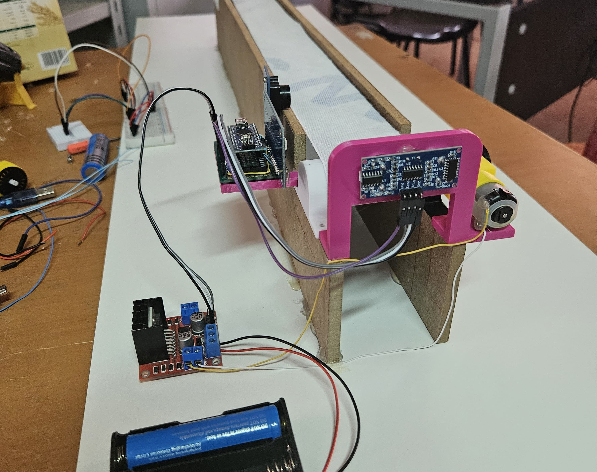 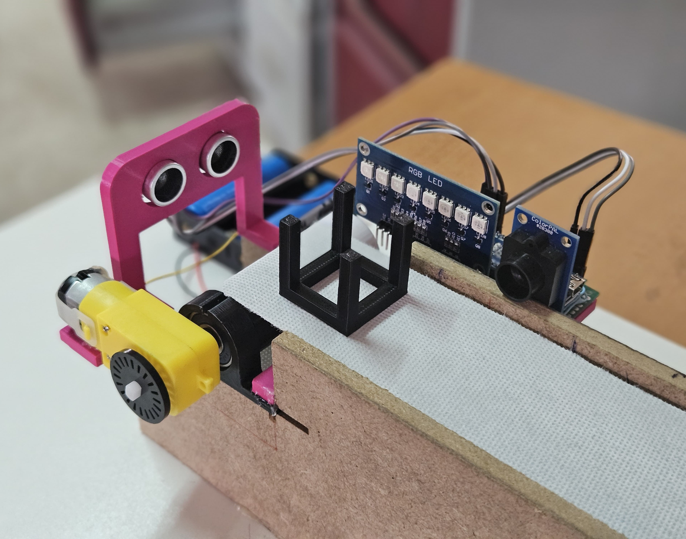 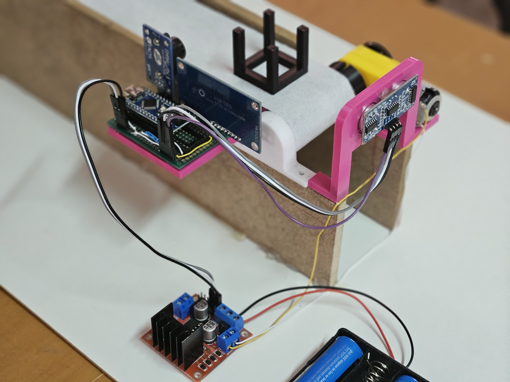 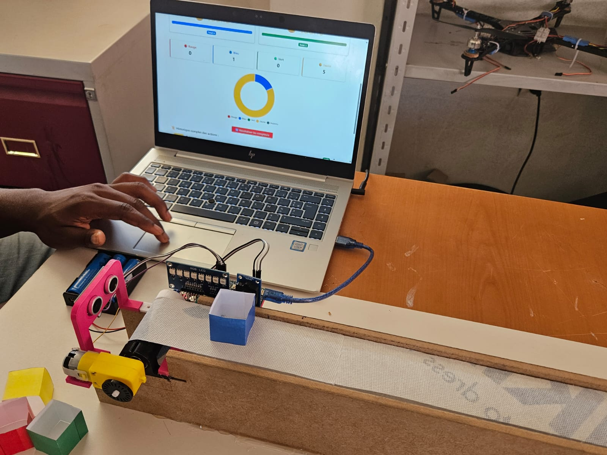Après:
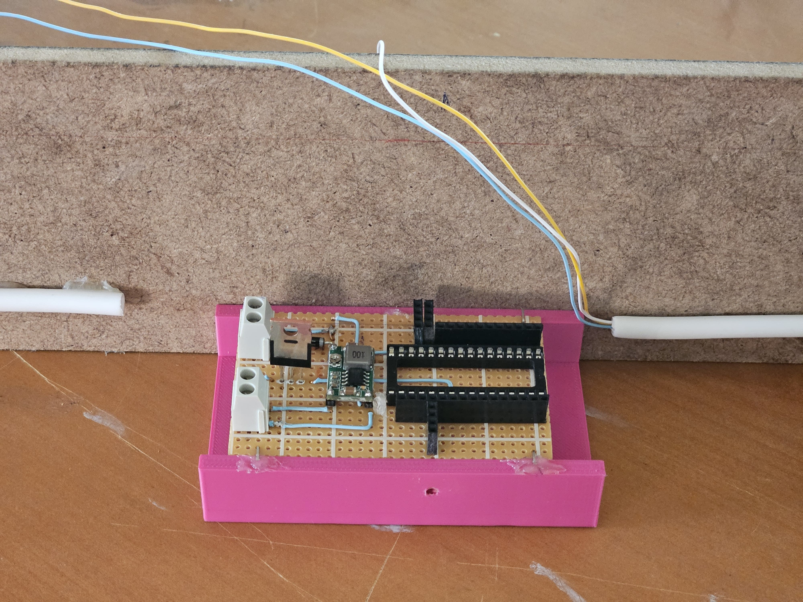 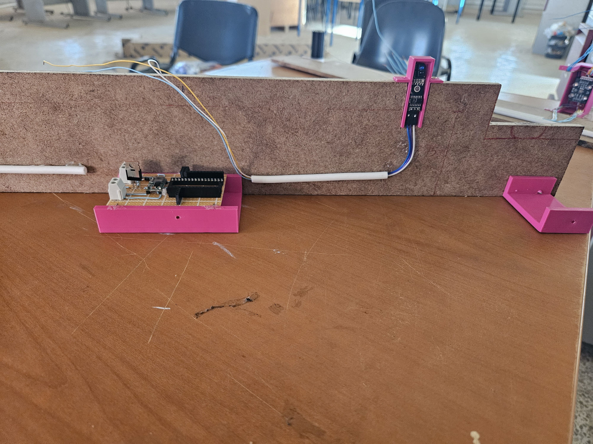 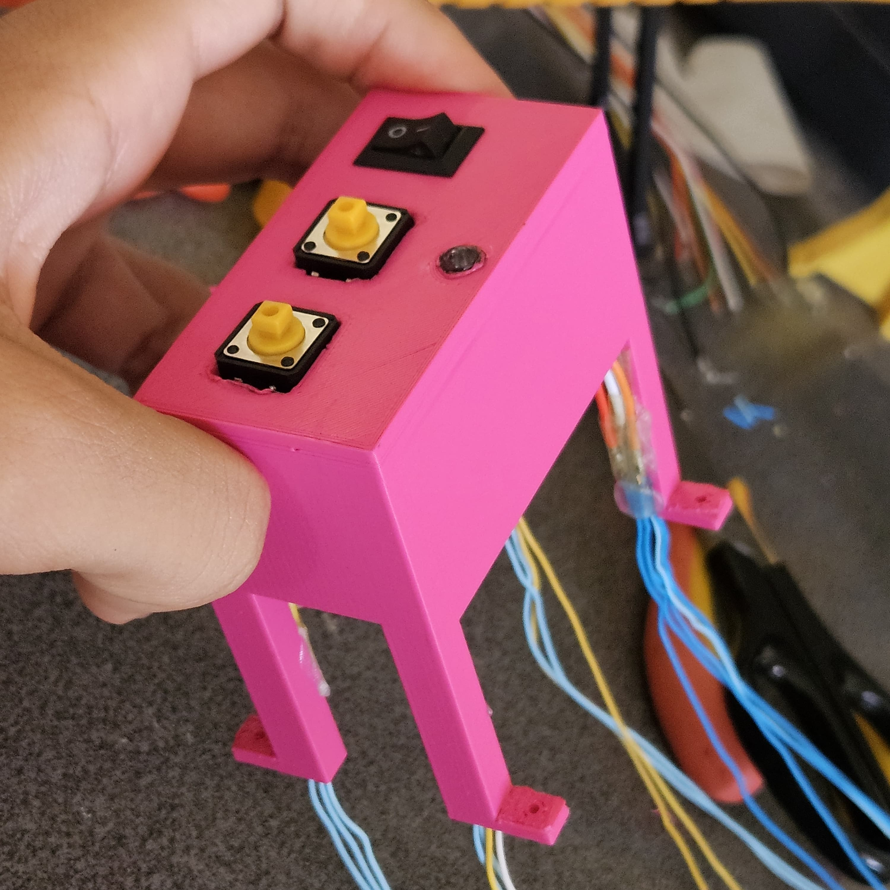 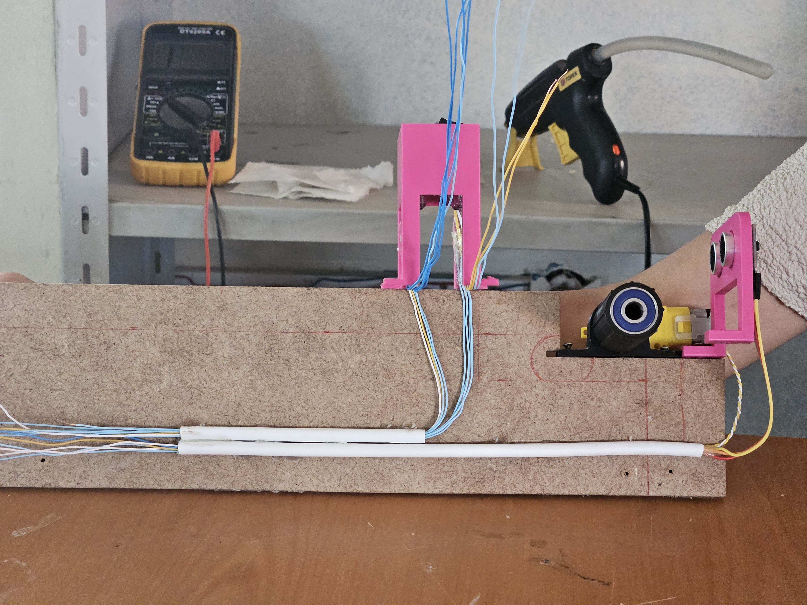
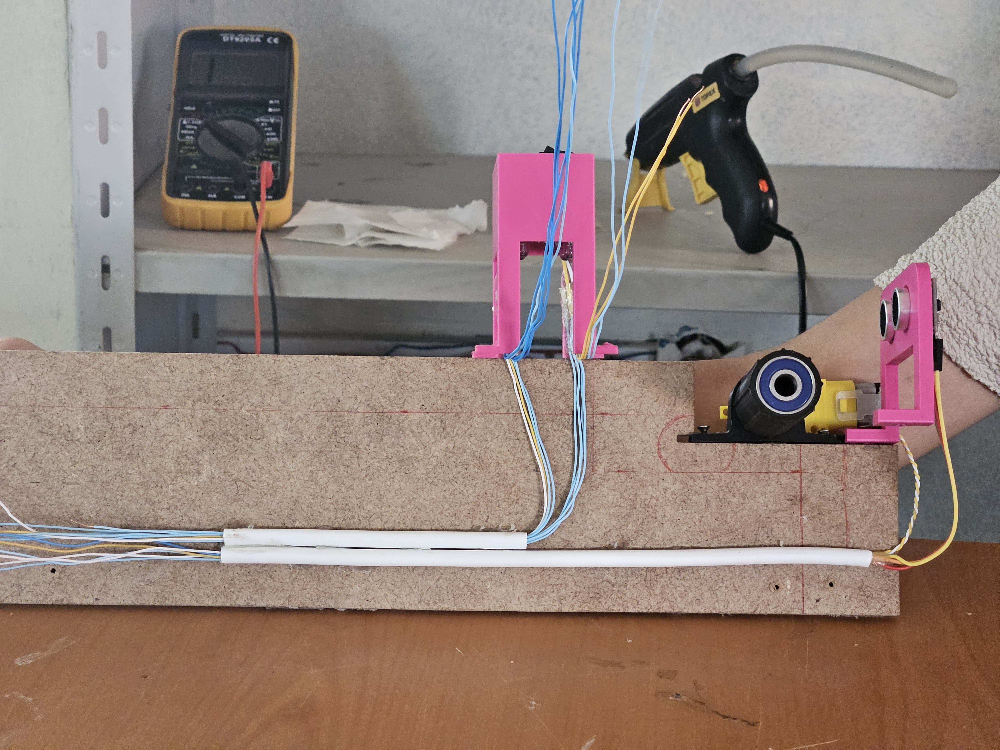
2. Protocole de test
Les tests individuels de chaque domaine ayant déjà été effectués, cette section est consacrée à l’évaluation du système global. L’objectif est de vérifier l’intégration de tous les modules pour garantir le bon fonctionnement de l’ensemble. Il s’agit donc de s’assurer que chaque domaine interagit correctement avec les autres dans un environnement complet et cohérent.
- Nous avons commencé par tester l'intégration de l'électronique et de la détection intelligente avec la structure du convoyeur à l'aide d'un petit code.
- Puis, nous avons testé le système avec l'interface web.
Avant amélioration:
Après amélioration: (bientôt disponible)
3. Résultats et démonstration
Après plusieurs tests et modifications, nous sommes parvenus à réaliser le système de convoyeur répondant au cahier de charge. En effet, le convoyeur respecte les contraintes de dimension(longueur et hauteur). Le tapis du convoyeur reste immobile et ne se meut que le système détecte des déchets. Ensuite, les déchets sont identifié lorsqu'ils passent dans la zone du capteur de couleur. Ils seront collectés manuellement à la fin du convoyeur et mis dans la berne indiquée par le système. Nous avons aussi mis en place une interface web pour permettre un suivi en temps réel du tri des déchets.
Voici des images et videos montrant notre travail:
Avant amélioration:

Après amélioration:(bientôt disponible)

Conclusion et Annexes
1. Conclusion et perspectives
Conclusion
Ce projet de convoyeur intelligent s’inscrit dans une dynamique de modernisation des processus industriels en intégrant des technologies issues de la mécanique, de l’électronique embarquée et de l’informatique. À travers ce système, nous avons démontré la possibilité de concevoir un dispositif autonome capable de détecter, identifier, trier et comptabiliser des déchets selon leur couleur, tout en assurant une visualisation en temps réel via une interface web conviviale.
L’intégration réussie des différents modules (capteurs, motorisation, contrôle Arduino, communication série, interface web) confirme la faisabilité technique du système. Les tests ont permis de valider le bon fonctionnement global, avec une réactivité satisfaisante, une précision correcte dans l’identification des couleurs et une visualisation instantanée des données.
Perspectives
Afin d’améliorer et de faire évoluer ce système, plusieurs pistes peuvent être envisagées :
- Tri physique automatisé : Ajouter des actionneurs (comme des bras ou des trappes motorisées) pour permettre un tri automatique dans les bacs, sans intervention humaine.
- Reconnaissance avancée : Intégrer des capteurs plus précis ou une caméra avec vision par ordinateur pour reconnaître non seulement la couleur, mais aussi la forme ou la matière du déchet.
- Interface distante : Permettre un accès à distance à l’interface via le cloud, pour un suivi en temps réel depuis n’importe quel appareil connecté.
Ce projet, en plus de sa portée pédagogique, constitue une base solide pour des applications concrètes dans le domaine du tri des déchets, contribuant ainsi à une gestion plus durable des ressources.
2. Annexes
Fiches techniques des composants électroniques:
- Microcontrôleur: Arduino nano
- Capteur de couleur: TCS230/TCS3200
- Capteur Ultrason: HC-SR04
- Capteur infrarouge: TRCT5000
- Affichage visuelle: LED RGB
- Module Wi-Fi: ESP-01
- Module Buck: MP2307